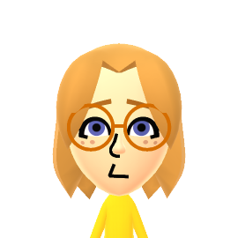

[Welcome]
 My name is Zoe Albers
I am a 20 year old Web Development Major who is currently going to school in Stevens Point, Wisconsin. I started coding when I was 17 for a college class in high school, and I wanted to do it as a career ever since. You can explore this page for as long as you want! There will be images and links to my other projects listed throughout. Have fun!
I am a 20 year old Web Development Major who is currently going to school in Stevens Point, Wisconsin. I started coding when I was 17 for a college class in high school, and I wanted to do it as a career ever since. You can explore this page for as long as you want! There will be images and links to my other projects listed throughout. Have fun!
Contact zalbe915@uwsp.edu
LinkedIn Zoe Albers
GitHub Zoe Albers
 Music Player
Music Player